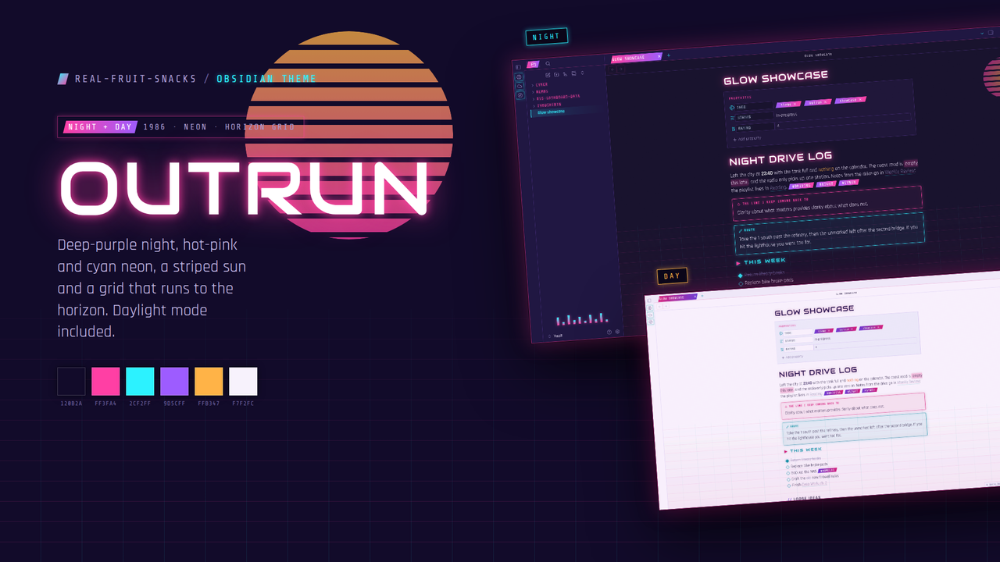
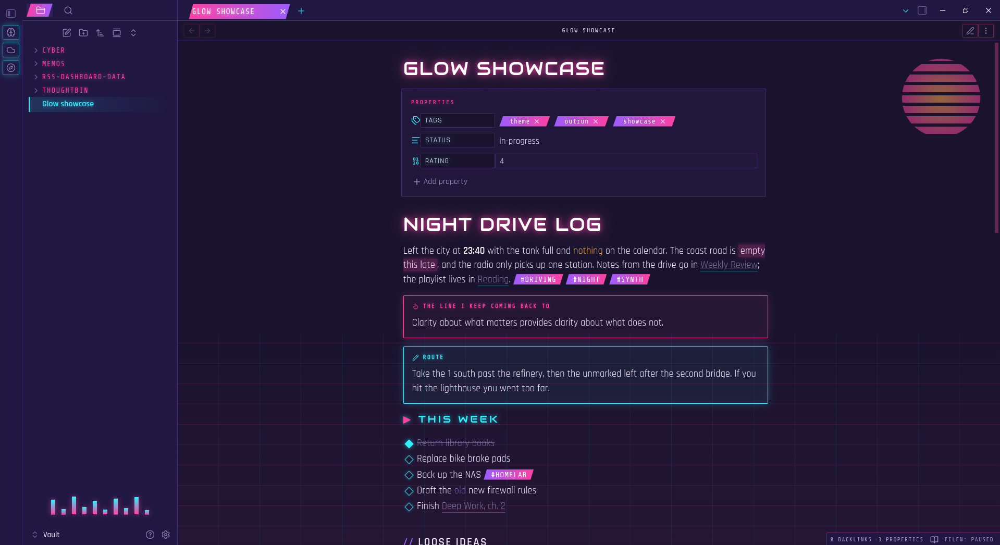
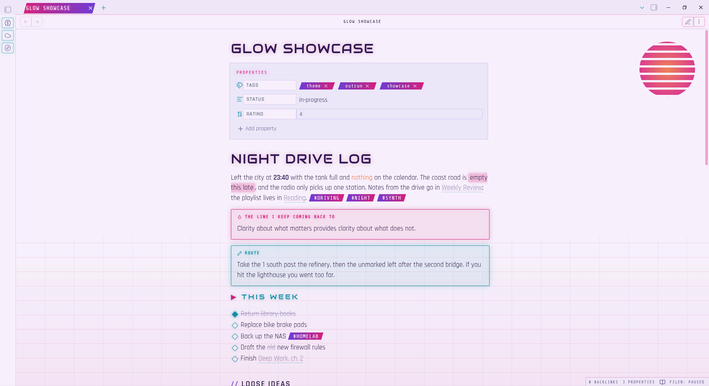

Outrun gives Obsidian a deep-purple night, hot-pink and cyan neon, a striped sun in the corner and a grid that runs to the horizon. Loud on purpose.

Everything, but it's all Obsidian's own variables and classes underneath, so plugins follow along.
Audiowide headings with a real glow, Rajdhani body text, Share Tech Mono for code, tabs and labels. All three fonts are embedded.
A striped sunset sits in the corner of every note and a pink-and-cyan grid fades in toward the bottom.
Neon-edged boxes with a glowing mono title, in a colour per callout type.
Clip-path tabs and tags, diamond checkboxes, pink diamond bullets.
Black code blocks with a cyan edge and a syntax palette tuned to the night.
Ten neon bars bounce under the file explorer. Respects reduced-motion.
Turn on Readable line length — the theme is built around a centred note with the sun and grid in the open space.


From the community list, or two files by hand.
theme.css and manifest.json from the latest release into .obsidian/themes/Outrun/, then pick it under Appearance..obsidian/
themes/
Outrun/
theme.css
manifest.jsonTwo modes, one world. Switch with Obsidian's base colour scheme.
| Role | Night | Day |
|---|---|---|
| Background | #120B2A · #1A1040 | #F7F2FC · #EFE7F8 |
| Pink | #FF3FA4 | #D61A7C |
| Cyan | #2CF2FF | #0A8FA6 |
| Purple | #9D5CFF | #6E3AD6 |
| Sun | #FFB347 | #EF6F3A |
| Text | #F3EAFF · #A99BD1 | #23133F · #6B5B90 |
Same site, a different glow per project.